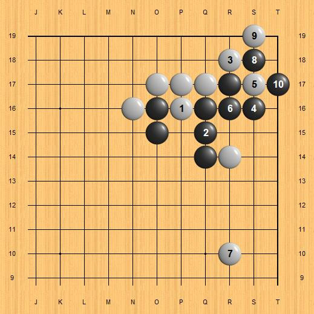

AlphaGo Zero Patterns
Deepmind published yet another article about AlphaGo in the Nature journal, in October 2017. The main difference between AlphaGo Zero and previous versions is that the Zero version learns Go... "from zero", starting from just the rules of the game, playing millions of games against itself and learning from its own mistakes, little by little. By contrast, the version of AlphaGo that defeated Lee Sedol last year had gone first through a "supervised learning" stage where it trained first on many game records from online Go servers, before improving by self-play.
This article is about some patterns I identified when reviewing the AlphaGo Zero games.
Pattern 1
AlphaGo Zero has the black stones in this diagram, playing against AlphaGo Lee. This pattern occurs in many of their published games (5 or so out of 20). Black ignores white's approach at R12, so white has the chance to invade at 3x3. How will black respond?
In all the games I saw with this pattern, AlphaGo Zero dodges AlphaGo Lee's invasion the same way: plays a forcing "hane" in the following diagram, a stone which is immediately sacrificed in order to capture the invasion stone. Black has solid eyes (and territory) as a result, white white has thickness on the outside.
Pattern 2
This is similar with pattern 1, except that in this case AlphaGo Lee plays a large slide ("ogeima") instead of the 3x3 invasion. How should black respond in this case?
AlphaGo Zero's response is to calmly make eyes (and some territory) by playing 3x3 itself. White exchanged 3-4 later, but I am showing it in sequence for convenience.
Pattern 3
This pattern occurs after AlphaGo Zero ignores an approach against its 4x4 ("hoshi"), and the opponent has the chance to play a double approach. By the way, it seems to me that AlphaGo Zero likes a lot to ignore an approach, more so compared to AlphaGo Master.
What will black play next: A, B or C?
Let me show first the traditional, human way to play: in the past black used to wedge in with 1, which results in the shape below. It is very puzzling that AlphaGo doesn't seem to like this at all for black, or at least it never played it in any of the published games! It should be very interesting to see if AlphaGo discovered this shape early during its self-training, and then discarded it for some reason; or maybe never even considered it (not very likely)?
We can think of this shape as somewhat inefficient for black, with the O15 so close to the other black stones. I guess the main reason why AlphaGo may dislike this is because black is completely lacking eye-shape - however this didn't stop humans to play it a lot: the oldest game record I have with this pattern is from 1881, and it continuously span the Go history, including pro games during the past 2 years in all of China, Korea and Japan.
If AlphaGo indeed thinks this is bad for black (as opposed to just avoiding it because it is slightly inferior), I would consider this as the second-biggest blind spot for human Go - with the humans' missing the 3x3 invasion against the "naked hoshi" firmly in number-one spot!
For those who studied AlphaGo Master's games, you would guess that black will connect solidly at R16 - this is what Master does most of the time.
AlphaGo Zero disagrees with Master though: it prefers this attachment instead! Compared to Master's firm connection, here black is stronger on the outside, but the corner is weaker. Also, black here seems to want to invite (or lure?) white to respond to this attachment.
I show next a few follow-ups from this pattern, from AlphaGo Zero's games.
In this one, white is also AlphaGo Zero, and it takes advantage of the weaker corner by playing a few forcing moves, and also develops on the right side. The R14 stone in this diagram (one of the initial double-approach moves) is being treated lightly, ready to be sacrificed.

The next diagram is from another Zero-vs-Zero game; unlike the previous diagram, white is taking a definite grip on the corner, while black is firmly capturing stone 4 and developing on the right side.
Here is yet another variation, this time white is ignoring black's attachment - white 1 and 3 are played elsewhere, so black gets two free moves locally, capturing one of the approach stones, then taking the corner, before white feels like having to defend on the upper side.
I found that Master also played the Q14 attachment once (instead of its favorite, R16 connection), against a human player. In the next diagram, white is Jiang Weijie 9p, and it looks like he took on Master's invitation and replied the attachment with hane at Q13.
Pattern 4
The next pattern is the lower half of the small Chinese opening. This is a very common pattern from human games too. White to play next - where?
The most common way is for white to play at 1 in the next diagram - "keima".
AlphaGo Zero has no patience for such slow moves though - it plays this contact move instead, aiming to make a larger living space for itself.
Here is the continuation I found in two games AlphaGo Zero played as white in this diagram against AlphaGo Lee. As a result white made a 100% living shape, at the expense of making black stronger toward the center and upper side - on the other hand black is left with cutting points to worry about.
As a reminder: AlphaGo doesn't know or care about local joseki, it always chooses moves according to the situation on the board as a whole. We should try to do the same, however it is also interesting and useful to analyze local positions and compare AlphaGo' choices between its different versions, or compare them with the traditional human choices.
Resources
Deepmind The AlphaGo Zero announcement..
Nice website where one can explore and replay all of published AlphaGo games.
Some of my thoughts on AlphaGo , including a brief history.